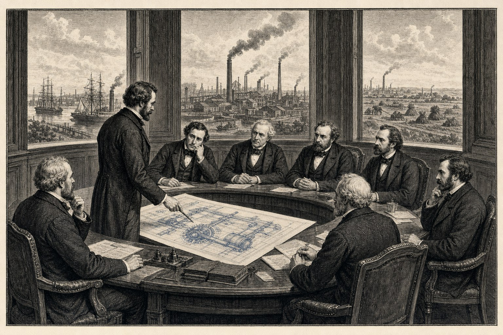

## 07 — The institutional condition\n\n*How a European economic Bondsraad can bring the two levers from paper to steel within a single political cycle.*\n\nWhat this instalment covers\n\n- The design requirements of a European economic Bondsraad — five to seven members, fixed multi-year terms, first-order measurement (productivity, CO2, energy autonomy) as a binding framework.\n- The amendment of three directives in a single package: Landfill Directive (to enable plastic burial as carbon storage), Waste Framework Directive (to demote household waste incineration to the final option), RED III (to accelerate the recognition of Juncao ethanol as renewable).\n- The political game: which commissioners, which parliamentary groups, and which national governments can make the first move.\n- The role of the knowledge layer (TNO, Fraunhofer, CNRS, ETH, KNAW, planning bureaus) as an independent first-order measurement authority — outside of the consensus mode.\n- Addressing the counter-argument: colonial past, human rights in production chains, and environmental effects of transport. Not to be explained away but to be answered structurally within the design.\n- The roadmap: five years from decision to three operational pilots, thereafter eight years of rollout to full European capacity, followed by net-negative emissions.\n- The concluding choice that Europe now makes: the consensus mode or a measured decision. A drawing on the wall, or an installation in Brazilië and Nigeria.\n\nThe press strategy as an institutional instrument\n\nA European economic Bondsraad possesses one instrument that no Commission has deployed to date: the monthly publication of six pages of measured facts regarding the levers, in a form and language that can be adopted by the broad press. Instalment 8 describes the mechanism. Here is the institutional anchoring: the Bondsraad shall have its own press service of fifteen to twenty people — chemical engineers, journalists, data visualisers, and former editors — who do not engage in PR but act as providers of facts. Their output is public, verifiable by the knowledge layer (TNO, Fraunhofer, CNRS, planning bureaus), and is distributed every month to thirty serious European newspapers. This costs approximately three million euro per year — less than one per cent of what current EU communication departments spend on brochures that no one reads. The effect: within three years, Giant Juncao, BiCRS and plastic storage in open-cast mines will be familiar terms to every literate European citizen. Within five years, the trade unions will have corrected themselves. Within eight years, the three pilots will be operating commercially.\n\nThe educational function of the public broadcaster\n\nAlongside the press service of the Bondsraad, there exists a second institutional instrument that remains underutilised today: the constitutional educational function of the public broadcasters — NPO in the Netherlands, ARD/ZDF in Germany, BBC in the United Kingdom, Radio France in France. These broadcasters have a statutory educational obligation of which they currently utilise less than ten per cent. The Bondsraad shall provide four or five themes annually for pedagogical programming; the broadcasters retain full editorial freedom. Instalment 9 elaborates on this mechanism entirely — not as propaganda, but as the rediscovery of an already existing public function. The effect: shared growth in prosperity from the two levers becomes visible to the population, and the inertia within trade unions, municipalities and political parties disappears not through pressure, but through the recognition of their own interests.\n\n*This instalment is still being developed with the step-by-step plan from decision to operational execution and the model regulations that will replace the three directives.*
Episode 7 · Condition · 8 min read
The Institutional Condition
How a European Economic Federal Council can, within a single five-year political cycle, bring the two levers from paper to steel. Three directives, one package, one decision.
